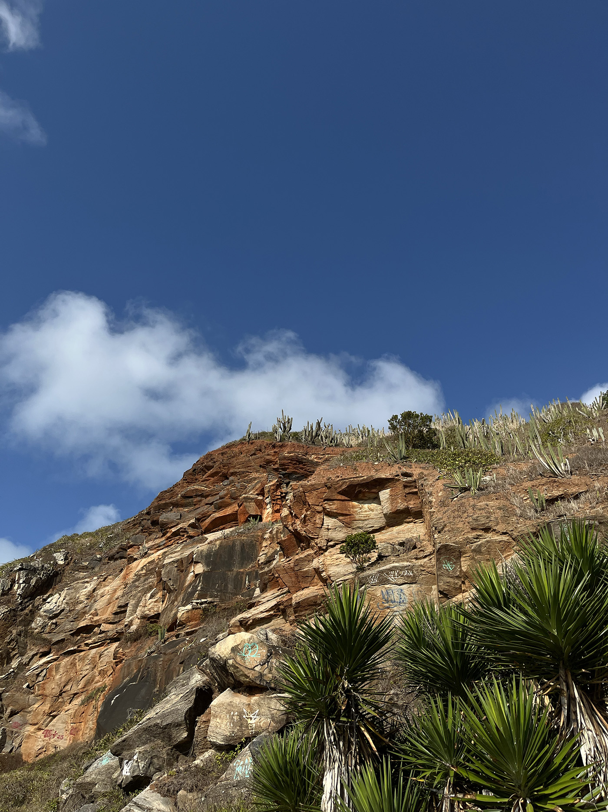

A fotografia é um jeito de ver e conhecer coisas atraves dos olhos de outras pessoas, experiencias a serem mostradas, lugares encantadores, entre outras visoes de olhares... e a seguir mostro um pouco do que gosto de ver e gostaria de mostrar
A natureza não é algo programado, é algo que se flui com o vento e o tempo, assim como nós.
A paisagem fala, é só se permitir ouvir.
O mar balança a alma.
No balanço do mar, mora o tempo certo.
Onde o vento sopra o corpo escuta.
O som das ondas é a música da alma.
;]